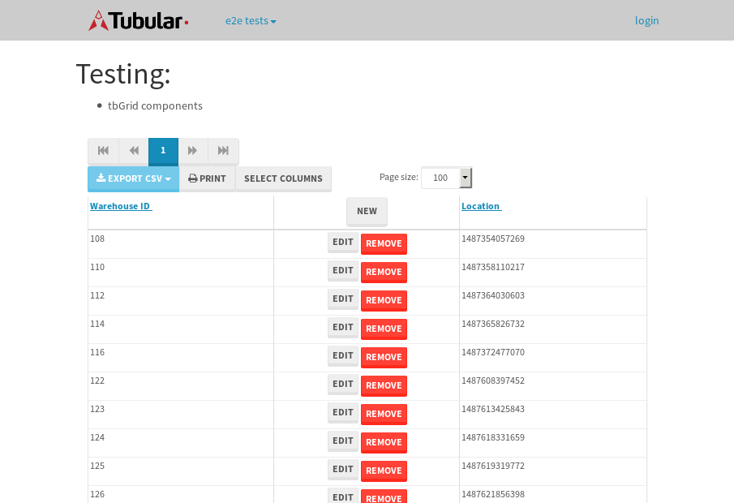

tbColumn.Grid Sorting - 25.78sTests: 5Skipped: 0Failures: 0 should sort data in ascending order then on descending order when sorting by Order Id column - 5.056sTests passed: 100.00%should order data in ascending order when click-sorting an unsorted text column - 4.725sTests passed: 100.00%should order data in descending order when click-sorting an ascending-sorted text column - 5.511sTests passed: 100.00%should order data in ascending order when click-sorting an unsorted date column - 5.194sTests passed: 100.00%should order data in descending order when click-sorting twice an unsorted date column - 5.293sTests passed: 100.00%
tbEmptyForm - 3.305sTests: 3Skipped: 0Failures: 1 should have an empty required field - 0.728sTests passed: 100.00%should not be able to click on save - 0.476sExpected null not to be null null.✗Tests passed: 50.00%should load default value for numeric field - 0.505sTests passed: 100.00%
Tubular Filters.tbColumnFilter - 107.528sTests: 12Skipped: 0Failures: 0 should cancel filtering when clicking outside filter-popover - 8.426sTests passed: 100.00%should disable Value text-input for "None" filter - 6.832sTests passed: 100.00%should disable apply button for "None" filter - 6.679sTests passed: 100.00%should decorate popover button when showing data is being filtered for its column - 11.993sTests passed: 100.00%should correctly filter data for the "Equals" filtering option - 8.57sTests passed: 100.00%should correctly filter data for the "Not Equals" filtering option - 9.121sTests passed: 100.00%should correctly filter data for the "Contains" filtering option - 8.527sTests passed: 100.00%should correctly filter data for the "Not Contains" filtering option - 8.794sTests passed: 100.00%should correctly filter data for the "Starts With" filtering option - 7.257sTests passed: 100.00%should correctly filter data for the "Not Starts With" filtering option - 6.762sTests passed: 100.00%should correctly filter data for the "Ends With" filtering option - 6.943sTests passed: 100.00%should correctly filter data for the "Not Ends With" filtering option - 6.714sTests passed: 100.00%
Tubular Filters.tbColumnDateTimeFilter - 133.85sTests: 12Skipped: 0Failures: 0 should cancel filtering when clicking outside filter-popover - 6.899sTests passed: 100.00%should disable Value text-input for "None" filter - 6.355sTests passed: 100.00%should disable apply button for "None" filter - 6.796sTests passed: 100.00%should clear filtering when clicking on Clean button - 17.549sTests passed: 100.00%should decorate popover button when showing data is being filtered for its column - 11.674sTests passed: 100.00%should correctly filter data for the "Equals" filtering option - 6.957sTests passed: 100.00%should correctly filter data for the "Not Equals" filtering option - 6.983sTests passed: 100.00%should correctly filter data for the "Between" filtering option - 12.554sTests passed: 100.00%should correctly filter data for the "Greater-or-equal" filtering option - 12.395sTests passed: 100.00%should corretlly filter data for the "Greater" filtering option - 12.004sTests passed: 100.00%should correctly filter data for the "Less-or-equal" filtering option - 11.677sTests passed: 100.00%should correctly filter data for the "Less" filtering option - 11.538sTests passed: 100.00%
Tubular Filters.tbColumnOptionsFilter - 79.877sTests: 3Skipped: 0Failures: 0 should cancel filtering when clicking outside filter-popover - 8.57sTests passed: 100.00%should decorate popover button when showing data is being filtered for its column - 12.153sTests passed: 100.00%should filter column-elements in accordance to the selected filter when selecting a single option - 48.4sTests passed: 100.00%
Tubular Filters.tbTextSearch - 49.059sTests: 5Skipped: 0Failures: 0 min-chars is not set - 1.182sTests passed: 100.00%should filter data in searchable-column customer name to matching inputted text, starting from 3 characters - 6.986sTests passed: 100.00%should filter data in searchable-column shipper city to matching inputted text, starting from 3 characters - 12.257sTests passed: 100.00%should show clear button when there is inputted text only - 6.574sTests passed: 100.00%should clear filtering when clicking clear button - 16.33sTests passed: 100.00%
tbForm related components.tbCheckboxField - 6.977sTests: 2Skipped: 0Failures: 0 should save changes on "SAVE" - 3.133sTests passed: 100.00%should discard changes on "CANCEL" - 1.965sTests passed: 100.00%
tbForm related components.tbDropDownEditor - 13.814sTests: 5Skipped: 0Failures: 0 should set initial input value to the value of "value" attribute when defined - 2.487sTests passed: 100.00%should show the component name value in a label field when "showLabel" attribute is true - 1.905sTests passed: 100.00%should show a help field equal to this attribute, is present - 1.817sTests passed: 100.00%should submit modifications to item/server when clicking form "Save" - 4.279sTests passed: 100.00%should NOT submit modifications to item/server when clicking form "Cancel" - 2.365sTests passed: 100.00%
tbForm related components.tbTextArea - 15.466sTests: 7Skipped: 0Failures: 0 should set initial input value to the value of "value" attribute when defined - 1.624sTests passed: 100.00%should be invalidated when the number of chars is not in the range of "min" and "max" attributes - 2.594sTests passed: 100.00%should show the component name value in a label field when "showLabel" attribute is true - 1.715sTests passed: 100.00%should show a help field equal to this attribute, is present - 2.015sTests passed: 100.00%should require the field when the attribute "required" is true - 1.919sTests passed: 100.00%should submit modifications to item/server when clicking form "Save" - 2.86sTests passed: 100.00%should NOT submit modifications to item/server when clicking form "Cancel" - 2.067sTests passed: 100.00%
tbForm related components.tbDateEditor - 13.39sTests: 6Skipped: 0Failures: 0 should set initial date value to the value of "value" attribute when defined - 1.944sTests passed: 100.00%should be invalidated when the date is not in the range of "min" and "max" attributes - 2.299sTests passed: 100.00%should show the component name value in a label field when "showLabel" attribute is true - 1.635sTests passed: 100.00%should show a help field equal to this attribute, is present - 1.831sTests passed: 100.00%should submit modifications to item/server when clicking form "Save" - 2.236sTests passed: 100.00%should NOT submit modifications to item/server when clicking form "Cancel" - 2.674sTests passed: 100.00%
tbForm related components.tbTypeaheadEditor - 16.259sTests: 7Skipped: 0Failures: 0 should show an options list when there is an API-info/component entered-data - 1.923sTests passed: 100.00%should select the option clicked - 2.158sTests passed: 100.00%should show a "delete" button when an option/match is selected, and delete the option if button is clicked - 2.219sTests passed: 100.00%should show a label value equal to the component name when "showLabel" attribue is true - 2.012sTests passed: 100.00%should require a value when "require" attribute is true - 2.345sTests passed: 100.00%should submit modifications to item/server when clicking form "Save" - 3.079sTests passed: 100.00%should NOT submit modifications to item/server when clicking form "Cancel" - 1.922sTests passed: 100.00%
tbForm related components.tbSimpleEditor - 22.016sTests: 9Skipped: 0Failures: 0 should set initial input value to the value of "value" attribute when defined - 1.635sTests passed: 100.00%should be invalidated when the number of chars is not in the range of "min" and "max" attributes - 3.382sTests passed: 100.00%should show the component name value in a label field when "showLabel" attribute is true - 1.933sTests passed: 100.00%should set input placeholder to the value of "placeholder" attribute - 2.025sTests passed: 100.00%should validate the control using the "regex" attribute, if present - 1.894sTests passed: 100.00%should show a help field equal to this attribute, is present - 2.343sTests passed: 100.00%should require the field when the attribute "required" is true - 2.634sTests passed: 100.00%should submit modifications to item/server when clicking form "Save" - 3.283sTests passed: 100.00%should NOT submit modifications to item/server when clicking form "Cancel" - 2.33sTests passed: 100.00%
tbForm related components.tbNumericEditor - 17.705sTests: 7Skipped: 0Failures: 0 should set initial component value to the value of "value" attribute when defined - 1.794sTests passed: 100.00%should be invalidated when the entered number is not in the range of "min" and "max" attributes - 2.165sTests passed: 100.00%should show the component name value in a label field when "showLabel" attribute is true - 1.676sTests passed: 100.00%should show a help field equal to this attribute, is present - 2.094sTests passed: 100.00%should require the field when the attribute "required" is true - 2.788sTests passed: 100.00%should submit modifications to item/server when clicking form "Save" - 3.13sTests passed: 100.00%should NOT submit modifications to item/server when clicking form "Cancel" - 2.518sTests passed: 100.00%
tbForm Connection Error NoModelKey - 4.019sTests: 1Skipped: 0Failures: 0 tbForm connection error functionality - 0.445sTests passed: 100.00%
tbForm Connection Error NoServerUrl - 3.096sTests: 1Skipped: 0Failures: 0 tbForm connection error functionality - 0.465sTests passed: 100.00%
tbGridComponents - 34.071sTests: 6Skipped: 0Failures: 1 should add item with newRow method - 6.073sTests passed: 100.00%should add item with newRow method and cancel action - 0.789sTests passed: 100.00%should update item with tbSaveButton - 0.846sFailed: ElementNotVisibleError✗Tests passed: 0.00%should NOT update item on cancel Update action - 2.025sTests passed: 100.00%should remove item with tbRemoveButton - 21.686sTests passed: 100.00%should NOT remove item on cancel Remove action - 1.149sTests passed: 100.00%
tbGridPager.navigation buttons - 9.656sTests: 1Skipped: 0Failures: 0 should perform no action when clicking on the numbered navigation button corresponding to the current-showing results page - 1.339sTests passed: 100.00%
tbGridPager.navigation buttons.first/non-last results page related functionallity - 3.67sTests: 2Skipped: 0Failures: 0 should disable "first" and "previous" navigation buttons when in first results page - 1.602sTests passed: 100.00%should enable "last" and "next" navigation buttons when in a results page other than last - 2.068sTests passed: 100.00%
tbGridPager.navigation buttons.last/non-first results page related functionallity - 4.647sTests: 2Skipped: 0Failures: 0 should disable "last" and "next" navigation buttons when in last results page - 2.777sTests passed: 100.00%should enable "first" and "previous" navigation buttons when in a results page other than first - 1.87sTests passed: 100.00%
tbGridPager.page navigation - 7.452sTests: 5Skipped: 0Failures: 0 should go to next results page when clicking on next navigation button - 1.505sTests passed: 100.00%should go to previous results page when clicking on previous navigation button - 1.561sTests passed: 100.00%should go to last results page when clicking on last navigation button - 1.381sTests passed: 100.00%should go to first results page when clicking on first navigation button - 1.826sTests passed: 100.00%should go to corresponding results page when clicking on a numbered navigation button - 1.179sTests passed: 100.00%
tbGridPagerInfo - 4.372sTests: 2Skipped: 0Failures: 0 should show text in accordance to numbered of filter rows and current results-page - 1.301sTests passed: 100.00%should show count in footer - 0.478sTests passed: 100.00%
tbHttp - 18.115sTests: 8Skipped: 1Failures: 1 should be authenticated - 3.839sTests passed: 100.00%retrieve data - 2.345sTests passed: 100.00%should not login bad credentials - 2.462sExpected '' to be 'false'.✗Tests passed: 0.00%should have a refresh token - 2.455sTests passed: 100.00%should remove authentication - 2.3sTests passed: 100.00%get method-Is not authenticated - 2.296sTests passed: 100.00%post method-Is not authenticated - 2.416sTests passed: 100.00%should regenerate access token on post - 0s***Skipped***Tests passed: 0%
tbPageSizeSelctor - 9.467sTests: 4Skipped: 0Failures: 0 should filter up to 10 data rows per page when selecting a page size of "10" - 2.223sTests passed: 100.00%should filter up to 20 data rows per page when selecting a page size of "20" - 1.55sTests passed: 100.00%should filter up to 50 data rows per page when selecting a page size of "50" - 2.371sTests passed: 100.00%should filter up to 100 data rows per page when selecting a page size of "100" - 1.91sTests passed: 100.00%
tbRowSelectable - 8.986sTests: 2Skipped: 0Failures: 0 selected rows - 4.893sTests passed: 100.00%unselected rows - 2.527sTests passed: 100.00%
tbSingleForm - 17.504sTests: 8Skipped: 1Failures: 0 should load correct info - 0s***Skipped***Tests passed: 0%should change customer name - 2.777sTests passed: 100.00%should save it - 2.706sTests passed: 100.00%should clear the inputs - 2.349sTests passed: 100.00%should update - 2.514sTests passed: 100.00%should reset editor - 2.356sTests passed: 100.00%should not save if not Changes - 2.49sTests passed: 100.00%should not be able to click on save - 2.312sTests passed: 100.00%


{kind=link}